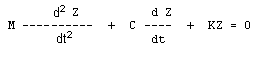
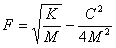
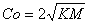
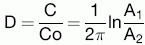
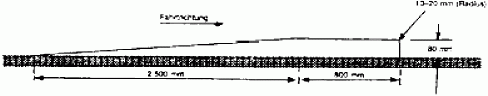
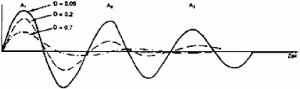

1 |
Definition der Luftfederung Ein Federungssystem gilt als luftgefedert, wenn die Federwirkung zu mindestens 75 Prozent durch pneumatische Vorrichtungen erzeugt wird. |
|
2 |
Gleichwertigkeit mit der Luftfederung Ein Federungssystem wird als der Luftfederung gleichwertig anerkannt, wenn es folgende Voraussetzungen erfüllt: |
|
2.1 |
Während des kurzzeitigen freien niederfrequenten vertikalen Schwingungsvorgangs der gefederten Masse senkrecht über der Antriebsachse oder einer Achsgruppe dürfen die gemessene Frequenz und Dämpfung der Federung unter Höchstlast die unter den Nummern 2.2 bis 2.5 festgelegten Grenzwert nicht überschreiten. |
|
2.2 |
Jede Achse muss mit hydraulischen Dämpfern ausgerüstet sein. Bei Doppelachsen müssen die hydraulischen Dämpfer so angebracht sein, dass die Schwingung der Achsgruppe auf ein Mindestmaß reduziert wird. |
|
2.3 |
Das mittlere Dämpfungsverhältnis D muss über 20 Prozent der kritischen Dämpfung der Federung im Normalzustand, das heißt mit funktionstüchtigen hydraulischen Dämpfern, betragen. |
|
2.4 |
Wenn alle hydraulischen Dämpfer entfernt oder außer Funktion gesetzt sind, darf das Dämpfungsverhältnis der Federung nicht mehr als 50 Prozent des mittleren Dämpfungsverhältnisses D betragen. |
|
2.5 |
Die Frequenz der gefederten Masse über der Antriebsachse oder der Achsgruppe während eines kurzzeitigen freien vertikalen Schwingungsvorgangs darf 2,0 Hz nicht überschreiten. |
|
2.6 |
Unter Nummer 3 werden die Frequenz und die Dämpfung der Federung definiert. Unter Nummer 4 werden die Prüfverfahren zur Ermittlung der Frequenz- und der Dämpfungswerte beschrieben. |
|
3 |
Definition von Frequenz und Dämpfung In dieser Definition wird von einer gefederten Masse M Kilogramm (kg) über einer Antriebsachse oder einer Achsgruppe ausgegangen. Die Achse oder die Achsgruppe hat einen vertikalen Gesamtdruck zwischen Straßenoberfläche und gefederter Masse von K Newton/Meter (N/m) und einen Gesamtdämpfungskoeffizienten von C Newton pro Meter und Sekunde (N/ms). Z ist der Weg der gefederten Masse in vertikaler Richtung. Die Bewegungsgleichung für die freie Schwingung der gefederten Masse lautet: |
|
 Die Frequenz der Schwingung der gefederten Masse F rad/s ist: Die Dämpfung ist kritisch, wenn C = Co ist, wobei ist.Das Dämpfungsverhältnis als Bruchteil des kritischen Wertes ist C/Co. Die kurzzeitige freie vertikale Schwingung der gefederten Masse ergibt die in Abbildung 2 dargestellte gedämpfte Sinuskurve. Die Frequenz lässt sich durch Messung der für sämtliche zu beobachtenden Schwingungszyklen benötigten Zeit ermitteln. Die Dämpfung wird durch Messung der aufeinanderfolgenden Schwingungspeaks, die in derselben Richtung auftreten, ermittelt. Wenn die Amplitudenpeaks des ersten und des zweiten Schwingungszyklus A1 und A2 sind, beträgt das Dämpfungsverhältnis D  Dabei ist ln der natürliche Logarithmus des Amplitudenverhältnisses. |
||
| 4 |
Prüfverfahren Um im Test das Dämpfungsverhältnis D, das Dämpfungsverhältnis bei entfernten hydraulischen Dämpfern sowie die Frequenz F der Federung bestimmen zu können, muss das beladene Fahrzeug entweder |
|
| a) | mit geringer Geschwindigkeit (5 km/h ± 1 km/h) über eine Schwelle von 80 mm Höhe mit dem in Abbildung 1 gezeigten Profil gefahren werden; auf Frequenz und Dämpfung ist die kurzzeitige Schwingung zu untersuchen, die sich ergibt, nachdem die Räder an der Antriebsachse die Schwelle wieder verlassen haben; oder | |
| b) | am Fahrgestell heruntergezogen werden, so dass die Antriebsachslast das Anderthalbfache des höchsten statischen Wertes beträgt. Danach wird die auf das Fahrzeug wirkende Zugkraft plötzlich aufgehoben und die daraus resultierende Schwingung untersucht; oder | |
| c) | am Fahrgestell hochgezogen werden, so dass die gefederte Masse um 80 mm über die Antriebsachse angehoben wird. Danach wird die auf das Fahrzeug wirkende Zugkraft plötzlich aufgehoben und die daraus resultierende Schwingung untersucht; oder | |
| d) | anderen Verfahren unterzogen werden, sofern ihre Gleichwertigkeit vom Hersteller gegenüber der zuständigen technischen Behörde zufriedenstellend nachgewiesen wurde. | |
Das Fahrzeug sollte zwischen Antriebsachse und Fahrgestell senkrecht über der Achse mit einem Schwingungsschreiber versehen werden. Anhand der Zeitspanne zwischen der ersten und der zweiten Kompressionsspitze lassen sich einerseits die Frequenz F und andererseits das Amplitudenverhältnis und damit dann die Dämpfung ermitteln. Bei Doppelantriebsachsen sollten Schwingungsschreiber zwischen jeder Antriebsachse und dem Fahrgestell senkrecht über diesen Achsen angebracht werden. |
||
Abbildung 1 Schwelle für Federungsprüfungen  Abbildung 2 Gedämpfte Sinuskurve bei einer kurzzeitigen freien Schwingung  |
||